5. Gravity Fed Water Delivery#
Newton’s 2nd Law of motion \(F=ma=m\frac{dv}{dt}\) is a classic differential equation with an amazingly wide range of physical applications. In this section, we consider an application of Newton’s 2nd law to analysis of gravity-fed water delivery systems. Understanding how the limit-quotient definition of derivative arises in a physical context is an important idea in understanding how differential equations governing physical processes are derived. In this case, solving the differential equation is simple. Antidifferentiation of the differential equation gives a solution which is called Bernoulli’s Law. We will then show how Bernoulli’s law applies to practical design of gravity-fed water delivery systems.
1. Introduction#
According to the World Health Organization, in 2022, around 2 billion people worldwide lived without close proximity to a safe water resource [https://www.who.int/news-room/fact-sheets/detail/drinking-water]. Unsafe water sources and lack of sanitation cause diseases and disabilities such as malaria, diarrhea, and blindness. These diseases kill an estimated 3.5 million people per year with most of the victims under five years old. Furthermore, unprotected water sources, such as surface and ground water, can become polluted by pesticides and by household and industrial waste. Additionally, agricultural and industrial over-extraction threatens the sustainability of these resources.
Globally, there exists a disparity in access to safe water between urban and rural populations. Simple, affordable pipe systems supply spring water to impoverished rural villages that would otherwise have no water delivery. The simplest of these systems are entirely gravity-powered; gravity alone moves water that flows through pipes directly from a source tank supplied by a natural spring at a higher elevation to a receiving tank for distribution at a lower elevation as shown in Figure 1 below.

In this section we will introduce and apply basic principles from fluid mechanics to construct a mathematical model of such gravity-fed water delivery systems. This model provides insight into calculations needed for actual construction (Figure 2), and serves as an excellent example of how even beginning calculus students (concurrently taking physics) can engage in a modeling problem of great practical importance.

We begin in Section 1.1 by using elementary physics to derive a basic form of Bernoulli’s equation, which describes conservation of energy for a fluid particle flowing along a streamline. Next, in Section 1.2 we apply Bernoulli’s equation to a simple gravity-fed water delivery system. We introduce the concept of hydraulic heads to help visualize the conversion of potential energy into fluid pressure, revealing the need for break-pressure tanks to avoid any risk of pipe explosion. We also analyze the conversion of potential to kinetic energy to predict flow rates (important for meeting the client village’s demand). Section 1.3 explains how the basic model is modified to account for friction and different kinds of water flow. In particular, we show how the fluid velocity changes for laminar or viscous flow and explain qualitatively the use of Moody charts in finding the friction factor for turbulent flow. Section 1.4 gives an example of steps involved in overall system design. Section 1.5 looks at how basic water delivery systems have been effectively used in Honduras. Finally, Section 1.6 gives suggestions for those interested in further study. Table 1 serves as a hand reference for the notation and units used in this Module.
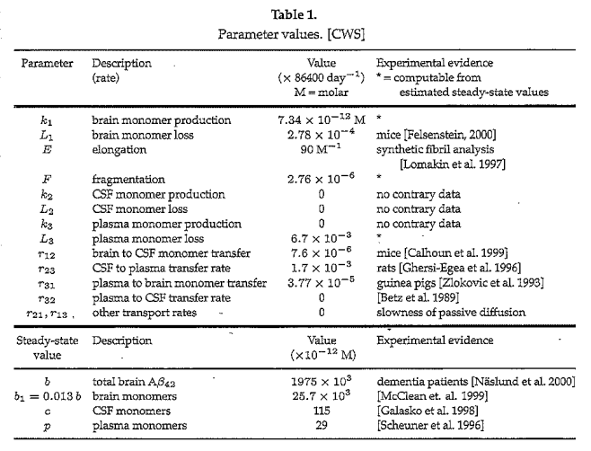{kind=link}
2. Derivation of Bernoulli’s Equation#
Our goal is to model the motion of a water particle along a path called a streamline when building a simple system to deliver water through a pipe. Bernoulli’s equation is fundamental in fluid mechanics for analyzing the motion of a fluid particle (not only liquid) along a streamline and is of particular importance in our analysis of gravity-fed water delivery systems. We will derive a basic form of this equation, following Young, et. al. [2001], using several simplifying assumptions compiled in Table 2.

We start by representing a fluid particle as a differential volume element shaped as a rectangular prism with size \(\delta V\) cubic units, and look at the forces acting on it. To analyze this motion, we introduce the (\(\hat{s}\),\(\hat{y}\),\(\hat{n}\)) orthogonal curvilinear coordinate system (see Figure 3). If we assume the streamline is situated in a single plane, then the (\(\hat{s}\),\(\hat{y}\),\(\hat{n}\)) coordinate system is obtained from \((\hat{x}\),\(\hat{y}\),\(\hat{z}\)) coordinates by keeping the \(\hat{y}\) axis (which is normal to the plane) fixed and rotating the \(\hat{x}\) and \(\hat{z}\) axes by a negative angle \(\theta\) to obtain the \(\hat{s}\) and \(\hat{n}\) axes respectively. The positive \(\hat{s}\) axis gives the direction of fluid particle motion along a path called a streamline.

\(\hat{s}\)= distance traveled along a streamline (note that the unit vector in the positive \(\hat{s}\) direction is always tangent to the streamline);
\(\hat{n}\)= normal to the streamline; and
\(\hat{y}\)= perpendicular to the \(\hat{s}-\hat{n}\) plane.
At each point along its path of motion, the total force \(\stackrel{\rightarrow}{F}_{total}\) on the fluid particle (control volume) satisfies Newton’s \(2^{nd} \) Law:
Equation (1)
where \(m\) is the mass of the control volume and \(\stackrel{\rightarrow}{a}\) is its acceleration. Since we assume the system doesn’t create or absorb force, meaning it has no sources or sinks of energy (assumption A2) and there is no friction (inviscid flow–assumption A4), the only forces acting on the particle will be due to
gravity: (\(\stackrel{\rightarrow}{F}_{gravity} \)), acts in the downward (-\(\hat{z}\)) direction; and
fluid pressure: (\(\stackrel{\rightarrow}{F}_{pressure})\), acts in the \(\hat{s}\) direction.
Thus we calculate net force and the components of forces in the direction of the streamline as follows:
Equation (2)
where (see Figure 4)
\(F_{s}\) is the component of the total force along the streamline;
\(F_{ps}\) is the component of the pressure force along the streamline; and
\(F_{gs}\) is the component of the gravitational force along the streamline.

Note that the acceleration of the control volume at time \(t\) will be \(\stackrel{\rightarrow}{a}=\stackrel{\rightarrow}{a_{s}}=\frac{d \stackrel{\rightarrow}{u}}{dt}\), where \(\stackrel{\rightarrow}{u}(t)\) is the fluid particle’s velocity which, by definition, is along the streamline. (For curved water pipes and streamlines, beyond the scope of this Module, the normal component of acceleration (\(a_{n}\)) is considered when computing pressure variation across a streamline [Young et. al. 2001].) Recalling that \(u=\mid \stackrel{\rightarrow}{u} \mid = \frac{ds}{dt}\), by the chain rule of differentiation, the component \(a_{s}\) of the acceleration \(\vec{a_{s}}\) of the control volume in the direction of the streamline is
Equation (3)
Noting that \(F_{s} = ma_{s}\), by equations (2) and (3),
Equation (4)
where the mass \(m\) of the control volume is the product of the mass density \(\rho\) (mass per unit volume) and volume \(\delta V\) .
We will now obtain expressions for \(F_{gs}\) and \(F_{ps}\) in equation (2). First, to find \(F_{gs}\) we observe that the magnitude of the force due to gravity is given by
Equation (5)
which we recall is in the \(-\hat{z}\) direction. It is convenient to define the specific weight \(\gamma = \rho g\), so we can rewrite equation (5) as
Equation (6)

From equations (5) and (6), the component of the gravitational force acting on the control volume along the direction of the streamline will be
Equation (7)
Note that the negative sign is needed since \(-\frac{\pi}{2}<\theta<0 \Rightarrow -\sin \theta >0\).
Our next task is to find the magnitude \(F_{ps}\) of the force on the control volume (in the direction of the streamline) due to pressure. For steady, inviscid flow (assumptions A3, A4), pressure acts perpendicular to each point of every cross section and its magnitude is a function of \(s\) only; that is, \(F_{\textup{ps}}=p(s)\). Suppose the center of the control volume is at \(\hat s = s_0\). Recalling that pressure is force per unit area, let \(p(s_0)\) be the magnitude of the pressure on the rectangular cross-section \(\mathcal{R}_0\) which is perpendicular to the streamline at \(\hat s = s_0\) (see Figure 6).
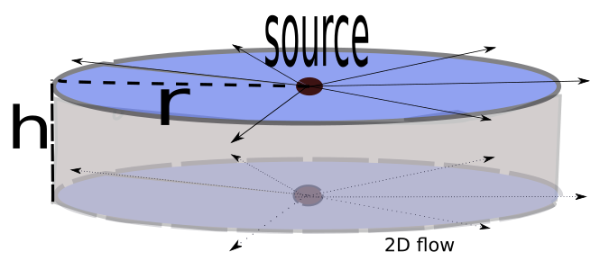{kind=link}
The magnitude of the pressure at the two ends of the control volume parallel to \(\mathcal{R}_0\) are \(p_{right}=p(s_o+\frac{\delta s}{2})\) and \(p_{left}=p(s_o-\frac{\delta s}{2})\) . A linear approximation for \(p_{right}\) (Figure (7)) is given by
Equation (8)

As \(\delta s \rightarrow 0\) the approximation error also approaches 0. The control volume is infinitesimal, so Equation (8) is a good approximation. In a similar way, we approximate \(p_{left}\) using \(p(s_o-\frac{\delta s}{2})\approx p(s_0) - \frac{dp}{ds}\frac{\delta s}{2}\).
Since pressure is force per unit area, and the cross-sectional area is \(\delta A=\delta n \delta y\) (Figure (3)), the net force magnitude from pressure on the control volume at \(\hat{s}=s_0\) will be
Equation (9)
The desired expressions for the gravitational force magnitude \(F_{gs}\) and pressure force magnitude \(F_{ps}\) on the control volume in the direction of the streamline are given by equations (7) and (9), respectively. Substituting these expressions in equation (4), we obtain
Equation (10)
We will express this relationship in a slightly different form by noting the following:
\(u\frac{du}{ds} = \frac{1}{2}\frac{d(u^2)}{ds}\); and (see Figure 8)
\(\sin \theta=\frac{dz}{ds}\).
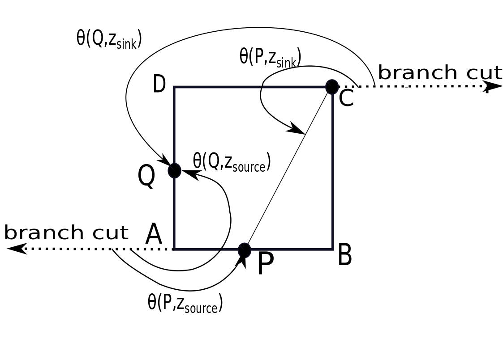{kind=link}
Thus, equation (10) becomes
Equation (11)
Finally, recalling that \(\rho\) is constant (incompressibility assumption A1), integrating both sides of equation (11) with respect to \(s\) gives
From equation (12) we see that there is a relationship along a streamline between the fluid pressure, particle speed and particle elevation. We have achieved our goal to obtain a basic form of Bernoulli’s equation, a very powerful tool in fluid mechanics [Young et al. 2001].
When modeling gravity-fed water delivery systems, we will apply the following equivalent form of Bernoulli’s equation obtained by dividing all terms in equation (12) by the specific weight \(\gamma=\rho g\) (with \(\frac{\rho}{\gamma}=\frac{1}{g}\)):
The different terms in equation (13) represent three types of energy (pressure (\(\frac{p}{\gamma}\)), kinetic (\(\frac{u^2}{2g}\)) and potential (\(z\))) expressed in units of length (Exercise 2.3). These terms are called heads as listed in Table 3. We will discuss application of these heads in the next section.

3. Application to Gravity-Fed Water Delivery Systems#
3.1 Basic Case#
In the previous section, we showed how Bernoulli’s equation describes a fluid particle moving along a one-dimensional streamline. Though it applies more generally than to water flowing through a closed pipe, Bernoulli’s equation will now help us plan and model a simple, gravity-fed water delivery system. Note that the assumptions behind Bernoulli’s equation are valid in this situation:
[A1] The fluid is incompressible- This assumption is good for liquids since they are less easily compressible than gases.
[A2] No sources or sinks of energy- All energy in this system comes from gravitational potential energy with no pumps, turbines, etc.
[A3] Steady flow- We will assume the spring keeps the source tank filled to capacity when the outlet faucet is open so that the water flow in the pipe is steady with time.
[A4] Inviscid flow- For our initial cases we will assume inviscid flow, meaning there is no friction, and energy is conserved.
We begin by considering the portion of a system in which water from a supply tank flows through a pipe to a single outlet faucet (Figure 9).

When the outlet faucet is closed, water flow in the pipe is halted and hence water in the supply tank is conserved. On the other hand, Bernoulli’s equation implies that pressure must build as we move down the pipe. Pressure in the case of a closed outlet is known as static pressure. To see why, let us consider the static case in which no new water enters the source tank and hence the water speed satisfies \(u=0\) throughout the system. In this case, Bernoulli’s equation simplifies to
where \(C\) is constant. Referring to Figure 10, since at point A the pressure head is zero (i.e. equal to atmospheric pressure) and the elevation head is \(z=h_1+h_2\), the constant \(C\) must satisfy \(C=h_1+h_2\). At the base of the faucet (point \(B\)), the elevation head is equal to zero and hence the pressure head satisfies
Equation (14)
If the static pressure build-up as we move along the streamline is too great, the delivery pipe could burst, as is considered in Exercise 3.1.2. 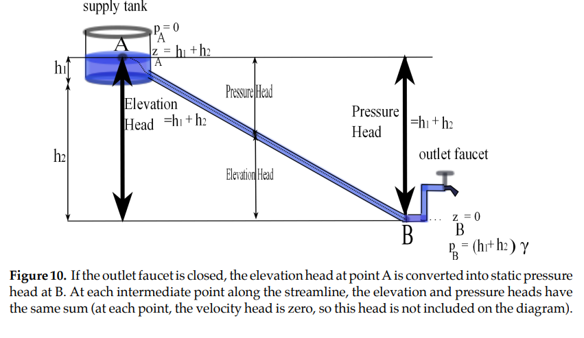
{kind=link}
3.2 Break-Pressure Tanks#
As mentioned in the previous section, if the flow of water is stopped in a gravity-fed system the static pressure inside the pipe must increase (increasing pressure head) as the pipe elevation decreases. If the pressure exceeds the pipe’s pressure capacity, the pipe could burst (see Exercise 3.1 b). To prevent this type of system failure, a small break-pressure tank (see Figures (11) and (12)) is installed at some judicious point along the path of the pipeline. Such a tank, typically made of brick, relieves pressure by allowing the flow to discharge into open air space inside the tank.

In other words \(p=0\) (atmospheric pressure) at the water level inside the break-pressure tank. A simple shut-off float valve (similar to that used to stop water flow in a toilet) and safety overflow pipe keep the water from exceeding the tank’s capacity so there is always open air space inside the tank. The break-pressure tank essentially becomes a new source tank for its outgoing pipeline Exercise 3.2.2.
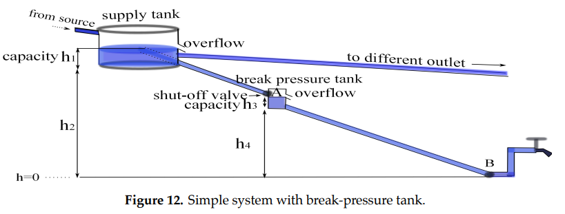{kind=link}
3.3 Water-Flow Rates#
In the previous sections we discussed pressure build up in a static system in which the flow of water is stopped by an outlet faucet at the end of a pipe from the source tank. In this case the outlet faucet will be open and water will flow, so the pressure is referred to as dynamic pressure (as opposed to static). We make the distinction now since, in the case of viscous flow, the static and dynamic pressures will be different (see Section 4). In this section we will analyze the speed of the water as it flows from one tank to another (Figure 13). Similar reasoning can be used to determine the flow rate from a tank to a home outlet with an open delivery pipe.

Being able to project flow rates is important for a number of reasons [Tawney n.d.]. If the flow rate is too slow, sedimentation occurs inside the pipe causing it to clog. On the other hand, if the flow rate is too fast, the pipe wall may erode. For these reasons the average water velocity should remain between 0.7 and 3 m/s. Further, the volumetric flow rate or volume of water per unit time depends on the speed of the water. The ability to meet the demand for water is determined by the volumetric flow rate.
Consider the gravity-fed water delivery system shown in Figure 14, in which a source fed pipe with radius \(r_1\) supplies a tank at a rate \(u_0\) so that the tank remains at height \(h_1\) above the delivery pipe; and the delivery pipe with radius \(r_2\) and vertical drop \(h_2\) meters connects the first tank to a second tank with capacity \(h_3\).

We find the rate \(u_B\) at which water exits the delivery pipe into the receiving tank as follows:
at point A, \(u=0,p=0,z=h_1+h_2\); and
at point B, \(u=u_B,p=0,z=0\).
Applying Bernoulli’s equation, we obtain
4. Viscous Flow in Pipes#
4.1 Head Loss#
To this point we have assumed inviscid or frictionless flow, but now we will consider how friction affects a gravity-fed system. In the inviscid case all energy was conserved, but now some of the initial gravitational energy in the pipe will be lost to friction as it flows through the streamline. This loss of energy is known as head loss, which is measured in meters and denoted as \(h_f\). Since all energy will either be conserved or lost to friction, Bernoulli’s equation becomes
Equation (15)
It is important to note that in the case of a closed outlet faucet the velocity and, consequently, the head loss, will both be zero. This is the case of static pressure and is the same for inviscid and viscous flow. However, when the outlet is open energy will be lost along the streamline. Since the velocity and elevation heads will be unchanged by friction all head loss will come from the dynamic pressure head in the form of a pressure drop \(\Delta p\). In other words,
Note that if a pipe can withstand a system’s static pressure case it will be able to withstand the dynamic pressure (Exercise 4.1).
4.2 Reynold’s Number#
Before we continue, we need to look closer at the friction occurring between the water and the pipe wall. In particular, we will investigate how the fluid velocity vectors on a cross-section of the pipe are affected by friction.
The effect of friction is related to the type of flow, classified into one of three types (see Figure 15):
laminar– streamlines are smooth;
turbulent– streamlines exhibit random fluctuations with pronounced nonlinear characteristics; and
transitional– streamlines change between laminar and turbulent characteristics.
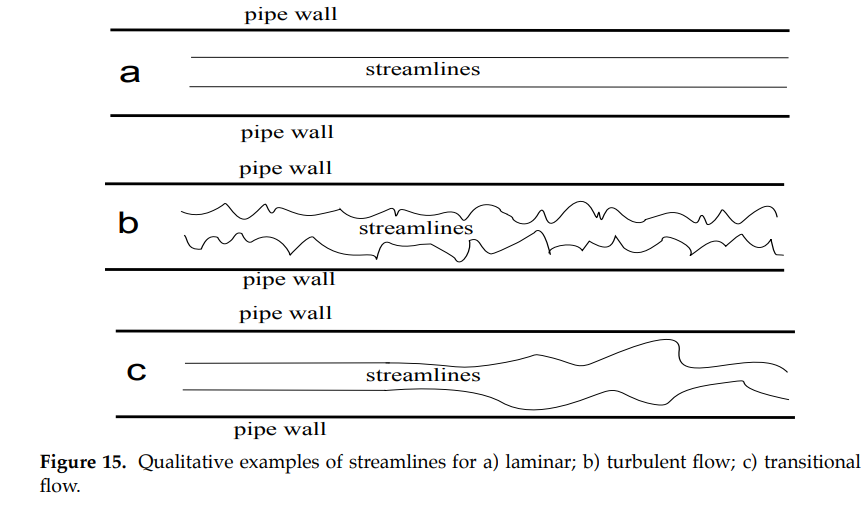{kind=link}
# This video shows the transition between laminar and turbulent flow.
from IPython.display import YouTubeVideo
YouTubeVideo('rn9y1CSoFZs')
The standard way to distinguish between the different kinds of flow is using the Reynolds number. Denoted \(Re\), the Reynolds number is defined as
where \(\rho\) is the fluid density (mass/volume), \(\bar{u}\) is the average speed on a cross section, \(D\) is the pipe diameter, and \(\mu\) is the dynamic viscosity, a parameter accounting for the fluid’s resistance to flow (\(\mu_{H_2O}=0.001 \frac{kg}{m \cdot s}\) at \(20^o C\)).
For a round pipe, the type of flow relates to the Reynolds number approximately as follows:
\(Re<2100\) \(\rightarrow\) Laminar flow: flow follows a smooth path;
\(2100 \leq Re \leq 4000\) \(\rightarrow\) Transitional flow: flow is a mix of laminar and turbulent characteristics; and
\(4000<Re\) \(\rightarrow\) Turbulent flow: flow is irregular with random changes in direction.
4.3 Laminar Flow#
Laminar flow is the easiest to analyze, and allows us to find a mathematical expression for the effects of friction on the flow. It can also be necessary for studying transitional flow since it is a combination of laminar and turbulent characteristics. However, it is worth noting that laminar flow is very rare in gravity-fed water delivery systems due to the velocities and diameters used (Exercise 4.2.4). For our derivation of velocity for a laminar flow we will begin by looking at a homogeneous, circular pipe with constant radius. To this end, we introduce cylindrical coordinates as follows (see Figure 16):
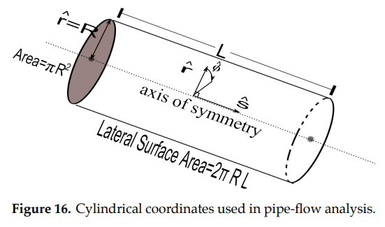{kind=link}
\(\hat{s}\)= position on a streamline along the central axis of symmetry;
\(\hat{r}\)= radial distance from the central axis of symmetry;
\(\hat{\phi}\)= not needed since we assume radial symmetry (as in the 2D pipe representation in Figure 17.)
We assume for our steady, incompressible viscous flow that velocity vectors are always perpendicular to each normal cross section of the pipe. That is, velocity is always parallel to the central axis of symmetry. It is important to note that velocity is no longer constant on a normal cross-section. Friction occurs where the water contacts the pipe, creating a cross-sectional velocity profile, as shown in Figure 17. Note, in particular, that the velocity of the water is \(\stackrel{\rightarrow}{0}\) at the pipe wall (no-slip condition) and is a maximum along the central axis of symmetry of the pipe (\(\hat{r}=0\)).

Note that the velocity profile is assumed to be the same on every cross-section. In other words, there is no fluid acceleration. A velocity profile is determined by its velocity gradient, meaning the rate of change \(\frac{du}{dr}\) of the magnitude of the velocity \(u=\mid\vec{u}\mid\) with respect to \(\hat{r}\). Friction is described by the shear stress \(\tau(r)\), which gives the magnitude of the frictional force per unit (lateral surface) area \(r\) units from the central axis of symmetry. For a Newtonian fluid (such as water), stress is related to the velocity gradient by the equation
where \(\mu\) is a constant called the dynamic viscosity. The negative sign indicates that the frictional force opposes the direction of fluid motion.
To derive the velocity profile we consider a concentric, cylindrical control volume (i.e. mathematical construct) with radius \(r\), cross-sectional area \(A_{cs}=\pi r^2\), and lateral surface area \(A_{L}=2\pi r L\) (Figure 18).

By Newton’s \(2^{nd}\) law, the total force (gravitational, pressure, and friction) acting in the \(\hat{s}\) direction on this volume must be zero since there is no acceleration in that direction:
Equation (18)
The component of the gravitational force \(F_{gs}\) on the control volume in the \(\hat{s}\) direction is given by \(F_{gs}=-\gamma \pi r^2 L \sin \theta\) (Exercise [4.3.1]). The component of the pressure force is given by \(F_{ps}= - \Delta \overline{p} A_{cs} = -\Delta \overline{p}\, \pi r^2\) where \(\Delta \overline{p}= \overline{p}_{right} -\overline{p}_{left}\) is the difference between the average pressures on the right and left faces of the control volume. The frictional force is given by \(F_{friction} = - \tau (r) A_{L}= -\tau (r) 2\pi rL \). It follows from equation (18) that
Recalling our assumption that stress is simply proportional to the velocity gradient (\(\tau (r) = -\mu \frac{du}{dr}\)), we have
for some constant \(C_1\). Noting that the velocity at the pipe wall is zero (\(u(R)=0\)) gives \(C_1 = -(\frac{\gamma L \sin \theta +\Delta \overline{p} \hspace{.01in}}{4\mu L}) R^2\). We conclude that the velocity profile for laminar viscous flow in a pipe must be parabolic:
Equation (20)
where \(u_0=u(0)= -(\frac{\gamma L \sin \theta + \Delta \overline{p} \hspace{.01in} }{4\mu L} ) R^2 \) is the speed along the central axis of symmetry.
In Exercise [4.3.2] you are asked to show that the corresponding volumetric flow rate is \(Q=\frac{\pi R^2 u_0}{2}\). Note that the maximum flow rate \(u_0\) is twice the constant speed of inviscid flow [Young et. al. 2001], so that the volumetric flow rate \(Q\) remains the same for laminar and inviscid flow (as one might predict from the continuity equation for incompressible flow).
4.4 Turbulent Flow#
Modeling of turbulent flow is more complex than laminar flow in many respects [Young et. al. 2001], including:
the velocity gradient for turbulent flow changes with the position \(\hat{s}\) of the cross section. (In this Module, for both inviscid and laminar flow, we only consider the case where the velocity gradient is the same on each cross section (i.e. fully developed flow));
the shear stress \(\tau\) for turbulent flow is no longer proportional to the velocity gradient and depends on both the dynamic viscosity \(\mu\) and the mass density \(\rho\) of the fluid. (For laminar flow, shear stress is independent of fluid density); and
the pressure drop \(\Delta p\) for turbulent flow depends on a roughness parameter \(\epsilon\) of the pipe wall. (For laminar flow, pressure drop is independent of pipe roughness).
The above considerations imply that for steady, incompressible turbulent flow, the pressure drop \(\Delta p\) in a round pipe with constant diameter may be described by a function of the form
Equation (21)
where \(\bar{u}\) is the average velocity on a cross section, \(R\) is the pipe radius, \(L\) is the length of the pipe, \(\epsilon\) is a roughness parameter of the pipe wall, \(\mu\) is the dynamic viscosity, and \(\rho\) is the density. (Other factors affecting pressure, such as water temperature, suspended particles, or dissolved gases are considered to be negligible, so equation (21) serves as a good approximation)
For steady, incompressible flow through a pipe of length \(L\) and diameter \(D=2R\), the head loss \(h_{f}(L)\) (i.e. loss in total energy due to friction) is dependent on a friction factor \(f\) according to the Darcy-Weisbach formula [Young et. al. 2001]
Equation (22)
Here the average speed \(\bar{u}\) is the same on each cross-section by the continuity equation (Exercise 3.3). The friction factor \(f\) is assumed to be a function of the form
where Re is the Reynolds number and \(\frac{\epsilon}{D}\) is called the relative roughness. The friction factor \(f\) is related to the Reynolds number Re and relative roughness \(\epsilon/D\), via the equation
whose solutions are compiled in tables or displayed graphically as Moody charts [Young et. al. 2001]. The latter has the qualitative form shown in Figure (20).
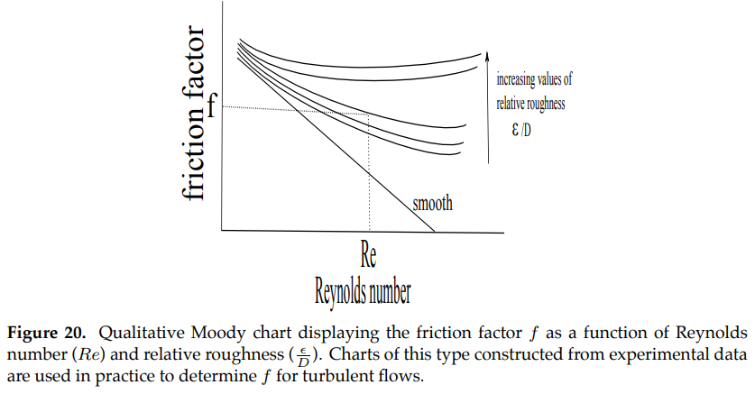{kind=link}
4.5 Pipe Selection#
We have introduced a number of important parameters related to pipe selection, including diameter, average cross-sectional speed, volumetric flow-rate, head loss due to friction, pressure capacity, Reynolds number and the friction factor, as summarized in Table 4. In this section, we discuss how relatively small changes in pipe diameter can lead to dramatic changes in the system design.

Figure (21) qualitatively shows a segment of a water delivery system for which three different pipes are being considered. The static head line shows the initial total energy available due to gravitational potential energy. The hydraulic grade line (HGL) for each pipe shows the amount of energy remaining after head loss as the water flows along the streamline.
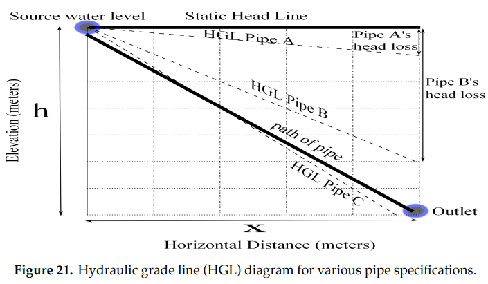{kind=link}
Table 5 (based on Appendix C of [Tawney n.d.]) shows the meters of head loss due to friction (per 100 meters of pipe) for various diameter pipes and flow rates. Note that flow rates that are too fast or too slow for practical use are excluded (\(>3 m/s\) causes too much erosion inside the pipe, while \(<0.7 m/s\) sediment from water settles and can block the pipe).

Observing that head loss and pressure capacity both vary inversely with pipe diameter, the three pipes in Figure 21 may be categorized as follows:
Pipe A: Head loss is the smallest, suggesting that this pipe has the largest diameter \(D\) and volumetric flow-rate \(Q\). Pipe A can thus service a greater demand for water, and friction effects are only a small factor in impeding water flow from reaching the destination outlet. However, a larger size pipe has a lower pressure capacity \(C\), so this pipe is most at risk of failure if the flow is halted by a closed outlet. In other words, a break-pressure tank is most likely needed for this pipe to prevent the static pressure from getting too high. (A break-pressure tank is required if the pipe’s allowable pressure head is less than the initial elevation head (\(h\)) minus the head loss (\(h_f\)));
Pipe B: This pipe has an intermediate pipe diameter and flow-rate, and as such, can meet an intermediate demand and also has an intermediate pressure capacity. A break-pressure tank may or may not be needed. Even with significantly greater head loss than pipe A, there is still enough available energy to transport the water all the way to the outlet; and
Pipe C: This pipe, with the smallest pipe diameter and volumetric flow-rate, would have the highest pressure capacity and thus is most likely to eliminate the need for a break-pressure tank. However, it can only meet a limited demand. Furthermore, since the pipe has a smaller diameter, the water will move through it with a higher velocity and lose more energy to friction. More energy goes into the head loss, making the HGL more steep and causing the HGL to fall below the pipe level. Where the HGL falls below the pipe level, there is insufficient energy available to move the water in the pipe to the outlet. In this case, a pump would have to be employed. (For systems empowered by gravity alone, the HGL should never fall below the pipe level since this results in negative pressure (to satisfy Bernoulli’s equation) which will prevent motion and can suck air or dirt into the pipe. Ideally the pipe will be built at least 5 meters below the HGL.)
Varying diameters in water-delivery systems between roughly 25 and 50 mm in diameter can result in these major differences in system performance ([Tawney n.d.]), thus highlighting the importance of careful system design before beginning construction.
5. Designing a System#
In this section, we will apply the ideas we have presented to the problem of designing a gravity-fed system for the village of Nan Mand in Micronesia. Using data from [Mogenson, 1996], we note that:
the population of 400 grows at an average rate of \(2\%\) annually;
the water demand is estimated at 416 liters per person per day; and
the system will flow from a source tank at an elevation of 195 m to an outlet faucet 2220 m away at 5 m, and the elevation survey between these points returns:
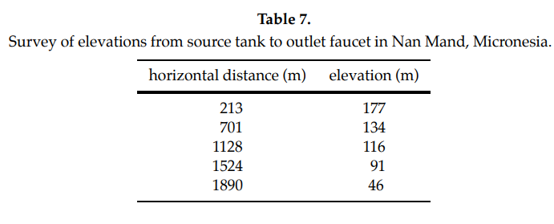{kind=link}
Our system design specifications include:
the system will meet the village’s need for the next 20 years;
the volumetric flow rate will be maintained with an acceptable water velocity;
the location and number of break pressure tanks (if any) will be specified;
head loss will be analyzed via an HGL diagram to ensure that the pipe stays below the HGL (hydraulic grade line); and
the pipe diameter will be the same for the whole system for the sake of simplicity.
At its current rate, the village will have a population of \(400*1.02^{20}=594\) in 20 years. With a water demand of 416 liters/person/day the system must supply 2.86 liters/sec, which we convert to 0.00286 \(m^3/s\) (1 \(m^3=\)1000 liters). Since we have a fairly large demand and a small change in elevation (i.e. less pressure buildup) we will first try a 50 mm diameter pipe. We will use the continuity equation
which is within the velocity bounds of 0.7 and 3 m/s (otherwise a new pipe diameter would need to be selected). Next we consider the static pressure limitations. The greatest pressure will be at the outlet faucet at an elevation of 5 m when the outlet is closed. The difference in elevation from the outlet to the source tank (190 m) gives us a pressure head of 190 m. We convert this to pressure as follows:
This static pressure exceeds the 50 mm pipe’s maximum operating pressure of 1144.5 \(\frac{kN}{m^2}\), so at least one break pressure tank will be needed. If one is placed at an elevation of 91 m (horizontal distance 1128 m), the first and second maximum static pressures will be 1019.2 \(\frac{kN}{m^2}\) and 842.8 \(\frac{kN}{m^2}\), respectively. Both of these are within the pipe’s rating, so no more break pressure tanks will be needed. The head loss per 100 m is given in Table 5, and since our flow rate of 2.86 l/s isn’t included we will use the closest value of Q (3 l/s) for this step. Also, since the pipe is at a small angle, we will estimate the pipe length as the horizontal distance. With this in mind our rate of head loss is 6.04 m per 100 m of horizontal distance (x). Now we will look at the dynamic pressure (outlet open) to make an HGL diagram using equation (13). The different heads are as follows:
Velocity Head (\(\frac{{\bar u^2}}{2g}\))-constant, \(=\frac{1.457^2}{2*9.8}=\)0.108 m
Elevation Head (z)-elevation of the current point in meters
Head Loss (\(h_f\))-increases at constant rate with horizontal distance, \(=\frac{x}{100}*6.04\)
Pressure Head (\(\frac{p}{\gamma}\))-dynamic pressure while pipe is flowing, \(=z-\frac{{\bar u^2}}{2g}-h_f\)

In Figure 22, the slope of the Hydraulic Grade Line is the rate of head loss, so the HGL has an equation of \(HGL=195-0.108-0.0604x\). Since the pipeline remains below the HGL at all points, we can be satisfied that this design meets all conditions. If the pipe went above the HGL, we would have to re-design the pipe with a larger diameter to reduce head loss and prevent negative pressures.
6. Case Study: Honduras#
A service learning project is an invaluable enrichment or motivation to the modeling of a gravity-fed water delivery system as described in this Module. For example, the nation of Honduras is one of the poorest in the Western Hemisphere, and its rural areas have historically had little access to clean water. In 2002, the World Health Organization (WHO) estimated 2,500 people die in Honduras each year due to lack of clean water. Gravity-fed water supply systems are cheap and low-maintenance, and the availability of mountain springs in Honduras makes such systems ideal to meet real needs. Indeed, water supply systems that use gravity correspond to \(93\%\) of all constructed systems in Honduras.
The Honduras Project (HP) is a student-led organization at Wheaton College which, since 1982, has helped bring potable water to under-served villages by installing gravity-fed systems. HP partnered for many years with the late Arnoldo Alvaraez, a Honduran civil engineer with years of experience designing, installing and maintaining systems. Throughout the year, the students raise funds through community projects and support letters. During spring break, the group travels to a Honduran village to help dig trenches, build tanks, and lay pipes.

HP, and programs like it, have helped Honduras’ water coverage improve significantly over the last few decades (Figure 24). These kinds of programs can be replicated by other schools or organizations. If you would like to learn more about the Honduras Project, you can visit their website at https://www.wheaton.edu/life-at-wheaton/ministry-and-evangelism/students/ministry-teams/honduras-project/.
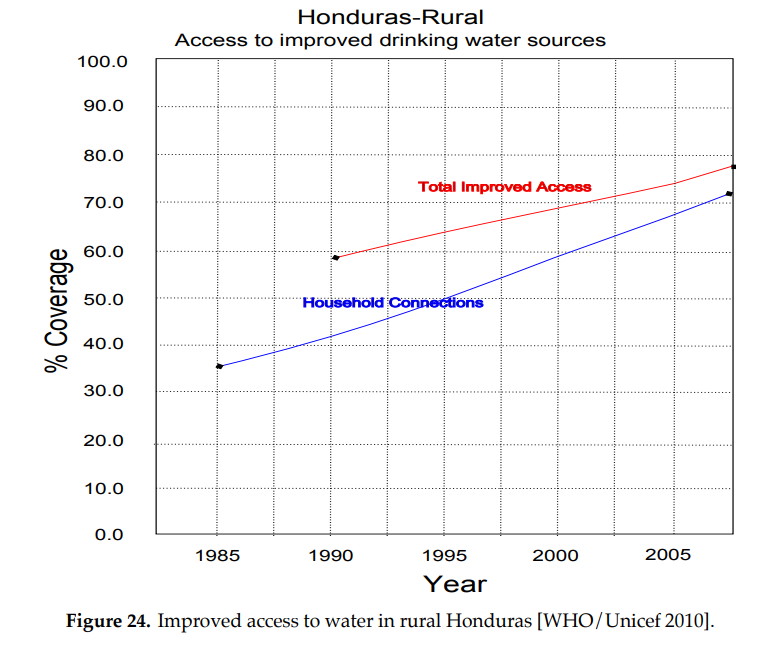{kind=link}
7. Further Directions#
In this Module, we have derived Bernoulli’s equation and then applied it to the modeling of pressure build-up and flow rates in a basic gravity-fed water delivery system. We then introduced break-pressure tanks, computed the velocity profile for laminar viscous flow, and described qualitatively friction effects for turbulent flow.
There are both practical and mathematical considerations leading to models of increasing complexity which have not been discussed in this chapter, including, but not limited to
- study of the effects on pressure and velocity if the main pipe splits into the smaller pipes of a distribution system;
- consideration of daily peak demand for water;
- evaluation of the water source, determining its quality and supply capacity;
- computation of vertical drop using surveying instruments;
- determination of demand in the village being serviced, including peak periods and population growth;
- inclusion of air-release valves within pipe systems;
- selection of attachments (eg. faucets) in delivery to individual homes;
- discussion of system maintenance and safety factors such as long-term use of PVC pipes;
- consideration of pressure variation within curved pipes;
- inclusion of other factors contributing to head loss such as suspended particles, dissolved gases, and water temperature;
- incorporation of non-steady and transitional flow analysis including head-loss through valves etc; and
- application of chaos theory, fractal geometry, and numerical analysis to turbulent flow.
Those interested in further study may consult Tawney [n.d.] and ACF [2008] for practical considerations, Nakayama and Boucher [1999] or Young et. al. [2001] for general background in fluid mechanics, Chin [2000] for general background in water-related engineering problems, and Jordan [1980] for a more in-depth discussion of gravity-fed water delivery systems.
Practical resources include:
Graphing calculators can easily be used to compare elevations with the HGL by entering the elevations into the stat plot and then graphing the HGL equation;
https://www.engineeringtoolbox.com/pvc-cpvc-pipes-pressures-d_796.html gives the maximum operating pressures of PVC pipes;
https://www.efunda.com/formulae/fluids/calc_reynolds.cfm provides a useful Reynolds number calculator with several different kinds of units.
Exercises#
Exercises
Section 2
2.1) Express in terms of \(\gamma\), \(\delta V\), and \(\frac{dz}{ds}\) the component of the gravitational force \(F_{gn}\) in the \(\hat{n}\) direction.
2.2) Recalling that the derivative is obtainable as a limit of a difference quotient, obtain the control volume pressure estimate \(p_{left}=p(s_0-\frac{\delta s}{2})\approx p(s_0) - \frac{dp}{ds} \frac{\delta s}{2}.\)
2.3) Let \(L\) be the dimension for length, \(M\) for mass, and \(T\) for time. Check the consistency of the dimensions in Equation (13) (terms which are added must have the same dimension).
Section 3
3.1.1 a) Referring to Figure (10), given that \(h_1=2\) m, \(h_2=9\) m, and water has a specific weight \(\gamma=9.789\frac{kN}{m^3}\), compute the pressure at point B in \(\frac{kN}{m^2}\), assuming the tap is closed (i.e. static pressure).
b) We are designing the same system as in part a using US units. We are given \(h_1=6\) ft., \(h_2=30\) ft., and water’s specific weight \(\gamma=62.3 \frac{lb}{ft^3}\). Compute the pressure at point B in psi (pounds per square inch), assuming the tap is closed.
3.1.2) Given that a 2.5 cm diameter PVC pipe has a maximum operating pressure of \(1862\frac{kN}{m^2}\), how many meters below the base of the source reservoir tank could the base of the faucet be safely located assuming the water level in the source reservoir never exceeds 3 meters? (All maximum operating pressures of PVC pipes are for schedule 40 pipes [Engineeringtoolbox n.d.])
a) At what horizontal distance will the pressure be the greatest when the faucet is closed?
b) If a 10 cm diameter PVC pipe (with a maximum operating pressure of 917 \(\frac{kN}{m^2}\)) was used, how many intermediate tanks would be needed to break pressure? (Water has a specific weight \(\gamma=9.789\frac{kN}{m^3}\).)
[3.2.1] A water delivery system is being designed based on the land surveyed in Tawney [2000] with a source tank at an elevation of 1000 m and an outlet faucet located at a horizontal distance of 850 m away at an elevation of 906 m. A survey for the proposed pipe path resulted in the following data:
3.2.2 Referring to Figure (12), assuming that the supply and break pressure tanks are filled to capacity, compute the water pressure in the pipe at point A (closed shut-off valve) and also at point B (base of the closed faucet). By how much is the pressure at the base of the faucet be reduced with the inclusion of the break pressure tank?
[3.3.1] The village of Mundenda, Zimbabwe is made up of 70 households with an average of five people per household whose minimum requirement for healthy living is 30 liters per person per day [Manyanhaire, 2009]. Find the volumetric flow rate Q (in liters/s) needed to keep its supply tank filled to capacity during an average demand period.
[3.3.2] If the pipe radius narrows (or alternately, widens), the rate of incompressible, steady fluid flow will increase (resp. decrease). To see why, consider two points \(\hat{s}=s_1, \hat{s}=s_2\) on a streamline. Let \(A_1\), \(A_2\) be the respective normal cross-sectional pipe areas (in \(m^2\)) and \(u_1\), \(u_2\) be the respective (average) speeds of the water flow through \(A_1\), \(A_2\). The continuity equation (see Chin [2000]) states that \( u_1 A_1 = u_2 A_2 = Q\), where the constant \(Q\) is the volumetric flow rate.
a) Suppose water flowing through a 5 cm (2 inch) diameter pipe has a velocity head of 3 m (10 ft). According to the continuity equation, what would the velocity head be if the pipe narrows to a 4 cm (1.5 inch) diameter? (Assume that \(g=9.8 \frac{m}{s^2}\)).
b) For the system shown in Figure 14, find the value for the spring supply rate \(u_0\) (in terms of \(h_1\), \(h_2\), \(r_1\) and \(r_2\)) in order to maintain steady flow at B.
Section 4
[4.1] A water source at an elevation of 50 m is flowing to an outlet faucet at 5 m. In the middle of the pipe at 30 m elevation you measure the velocity at 2.5 m/s. If the head loss to that point is 25 m, what does this mean for the pressure at that point? Recall that atmospheric pressure is our reference with p=0.
[4.2] Show that the Reynolds number is dimensionless.
[4.3.1] Show that \(F_{gs}=-\gamma \pi r^2 L \sin \theta\).
[4.3.2] Show that for a circular pipe with radius \(R\), the laminar, viscous flow rate (volume per unit time) through a cross section is \(Q=\frac{\pi R^2 u_0}{2}\) (Hint: Using polar coordinates, integrate the velocity profile \(u(r)\) given in equation (20) over a disc with radius \(R\)).
[4.3.3]
a) How does Figure 19 (adopted from [Nakayama, 1999]) account for the changing pipe diameter? Head loss due to friction?
b) How is Bernoulli’s equation for inviscid flow modified to include head loss?

[4.3.4] A pipe is being constructed to transport water at an average speed of 2 m/s. What is the largest possible diameter of pipe that would still have laminar flow? What would be the volumetric flow rate from this pipe? Is this realistic? Recall that \(\rho_{H_20}=998.2 \frac{kg}{m^3}\).
[4.4.1] Given that PVC is smoother than an iron pipe (i.e., PVC has a smaller relative roughness \(\frac{\epsilon}{D}\) than iron pipe), which of the two pipes has the greater friction factor \(f\) for a given Reynolds number Re?
[4.4.2] Assuming the maximum speed for turbulent flow is between that of inviscid and laminar flows, make a qualitative sketch showing the (symmetric) velocity profiles on a cross-section for these three types of flows.
[4.5.1] For a 25 mm diameter PVC pipe, a volumetric flow rate Q between .35 and 1.4 L/s is recommended by Table 5. Find the Reynolds number \(Re\) and head loss associated with the minimum and maximum flow rate.
[4.5.2] Suppose you are considering Pipe X for the pipeline shown in Figure 21. You are given Pipe X’s diameter \(D\), length \(L=\sqrt{h^2+x^2}\), friction factor \(f\), and relative roughness \(\frac{\epsilon}{D}\). Explain how you would obtain the Reynolds number \(Re\), average flow rate \(\stackrel{-}{u}\), volumetric flow rate \(Q\), head loss \(h_f\), and hydraulic grade line (HGL).
Section 5
[5.1] You are designing a gravity-fed water delivery system for the village of Tesuque Pueblo, New Mexico. The village has 980 people with an annual growth rate of 1.6 \(\%\) and an expected use of 322 liters per person per day. The Barranca Road source tank is at an elevation of 2255 meters and the outlet faucet is 15.3 km away at an elevation of 1920 m (Leder, 2001). An elevation survey gives us the following data:

Design a system that can meet the average demand for the next 10 years with no upgrades. Choose a pipe diameter listed in Table 6 that meets the flow rate and velocity restrictions and assume all pipe to be the same diameter
References#
ACF International. 2008. Design, Sizing, Construction and Maintenance of Gravity-Fed Systems in Rural Areas, Module 2. France: ACF.
Bentley, Jessica, et al. 2002. Sustainable Water Development for the Village of Miramar, Honduras. Water Resources Program, The University of New Mexico. http://repository.unm.edu/bitstream/handle/1928/10483/wrp-5.pdf?sequence=1
Chin, David. 2000. Water-Resources Engineering. Upper Saddle River, NJ: Prentice Hall.
eFunda.com. 2011. Reynolds Number Calculator http://www.efunda.com/formulae/fluids/calc\(\_\)reynolds.cfm
EngineeringToolbox.com. 2011. http://www.engineeringtoolbox.com
Hofkes, E.H. 1981. <i>Small Community Water Supplies. New York: John Wiley & Sons.
Jordan, Thomas. 1980. A Handbook of Gravity-Flow Water Systems. London: Intermediate Technology Publications.
Leder, Charles. 2001. Water Production/Transmission/Distribution System Pre-Feasibility Study for Pojoaque River Basin, NM. Albuquerque, NM: ASCG Inc.http://www.ose.state.nm.us/water-info/AamodtSettlement/Appendix03.pdf
Manyanhaire, Itai Offat and Taneal Kamuzungu. 2009. “Access to Safe Drinking Water by Rural Communities in Zimbabwe: A Case of Mundenda Village.” Journal of Sustainable Development in Africa11: 113-127.
Mogenson, Ulla. 1996. “Engineering Report for Nan Mand Water Supply System.” SOPAC Technical Report 241.
Nakayama, Y., R.F. Boucher. 1999. Introduction to Fluid Mechanics. New York: John Wiley & Sons.
Tawney, Eric. n.d. Masters International Peace Corp Program Technical Brief #4: Visualization of Construction of a Gravity-Fed Water Supply System. http://cee.eng.usf.edu/peacecorps/Resources.htm
U.S. Census Bureau. 2005. “Tesuque CDP, New Mexico 2005-2009 American Community Survey 5-year Estimates.” American FactFinder Fact Sheet.
Water.org. 2010. “Learn about the water crisis.” Accessed February 20, 2011. http://water.org/learn-about-the-water-crisis/facts/
WHO/Unicef Joint Monitoring Program for Water Supply and Sanitation. 2010. “Improved Drinking-Water Sources: Honduras.” Accessed February 20, 2011 http://www.wssinfo.org/fileadmin/user$\_$upload/resources/HND$\_$wat.pdf
Young, D., B. Munson and F. Okiishi. 2001. Brief Introduction to Fluid Mechanics New York: John Wiley & Sons.